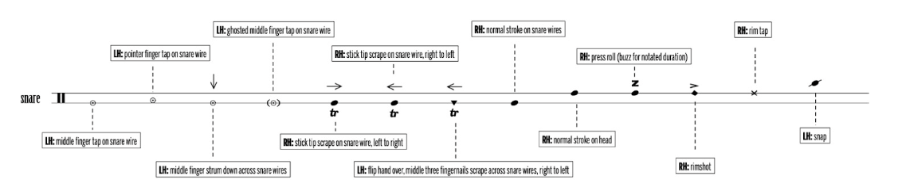

Evan Chapman — Buttonwood
Snare drum & electronics
Senior recital, spring 2023
Program notes

I have a complicated relationship with the snare drum. It's a peculiar instrument, calling for repeated rhythmic strokes on a drum surface undergirded by wires, whereas I gravitate towards the elements of melody and harmony offered by mallet instruments. My teachers, however, have always challenged and inspired me to search for singable phrases hidden in snare drum music. Evan Chapman's Buttonwood is intrinsically expressive and avant-garde. He composed the piece with the intention of evoking the repinique – a Brazilian metal drum played with one hand and one stick – by incorporating several different timbres: sounds that are low, high, short, long, warm, and harsh. He instructs the performer to mount the snare drum upside-down with the wire strainers running horizontally. The performer has a thirteen-note key with various instructions, such as scraping the wire or tapping the rim.
Whenever I bring friends to the symphony, I often encounter the same anxious refrain – what do I wear? Over the past few years, I've developed a fascination with haute couture. This project reimagines the symphony hall as a kind of public runway and an open and expressive social forum where audiences can participate in a creative project alongside the musicians, allowing high fashion to be enjoyed in arenas outside of the Met Gala or designer runways. To that end, I have partnered with the exceptionally talented Stanford designer Vincent Hao and models Ava Ford and Blake Pigott to envision a modernist take on Victorian formal wear. I am thrilled to present my multimedia interpretation of Buttonwood, synthesizing my respective creative passions.